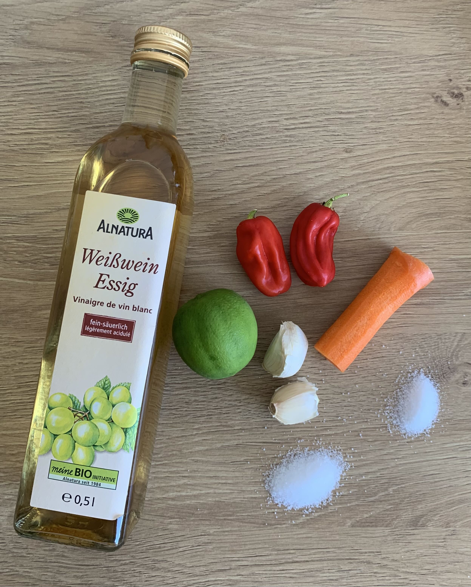
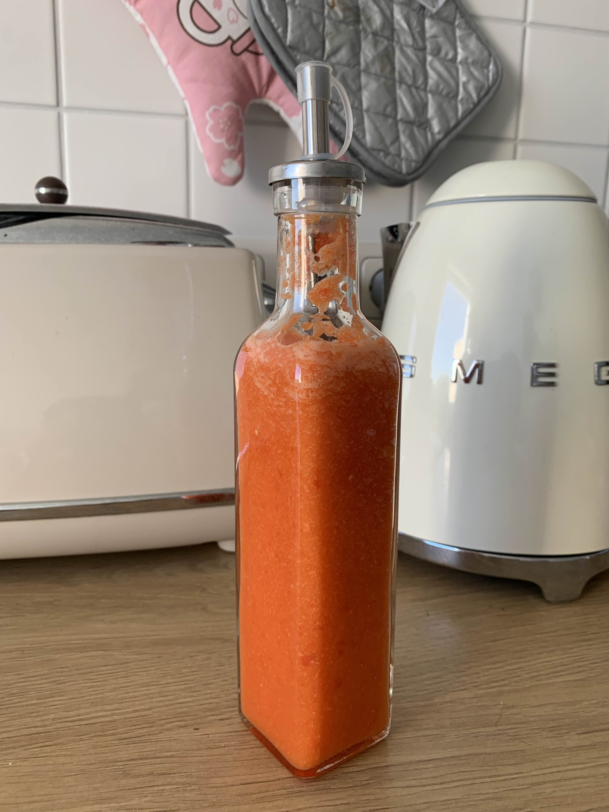

habanero hot sauce


grow your own habaneros to be extra cool
ingredients
- 2 medium sized habanero peppers
- 60ml white wine vinegar
- 60ml water
- 2 cloves garlic
- 1/2 medium sized red bell pepper
- 1 carrot
- juice of 1/2 lime
- 1 teaspoon salt
- 1 teaspoon sugar
steps
- wash, peel and rough chop veggies (use gloves for habanero, be careful!)
- blend it all up until smooth and fill into bottle
- if too thick, add more water. if too watery, add some more carrot/bell pepper
- keep in fridge for up to 2 weeks